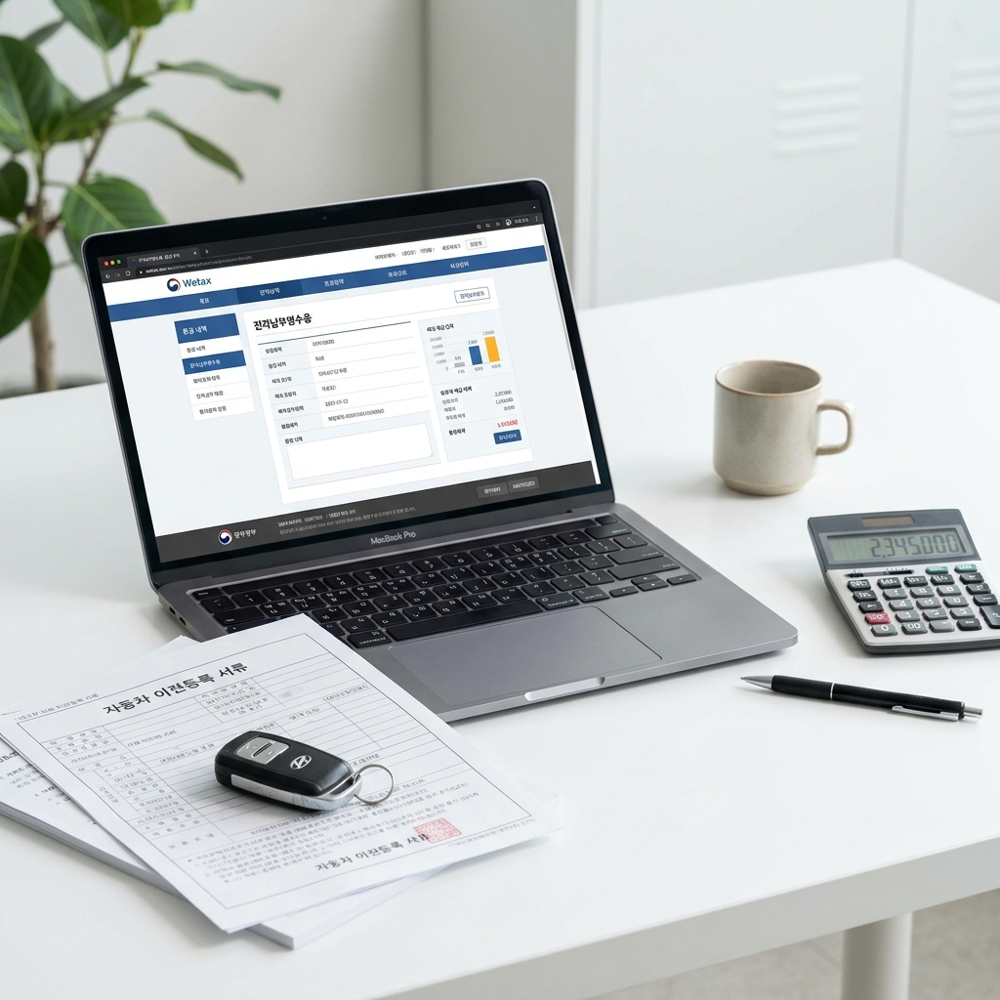
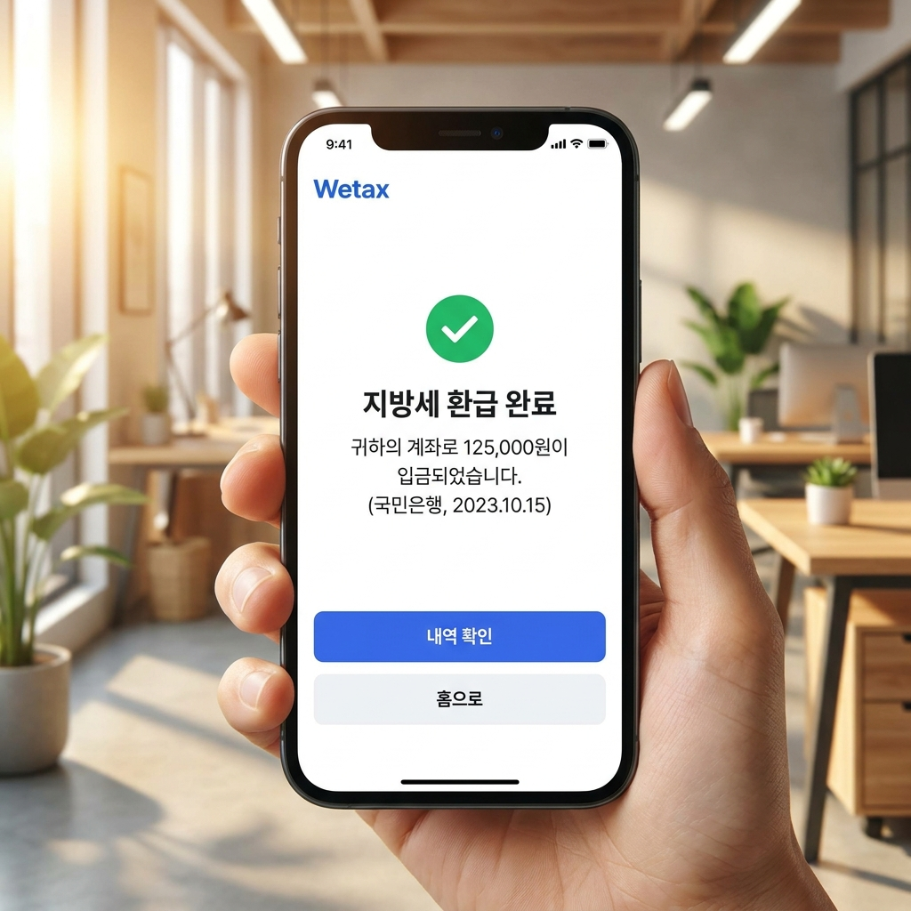

차량 매도·폐차 후 자동차세 환급금 계산 방법과 위택스 신청 절차 — 일할 계산 공식과 필요 서류 체크리스트
자동차를 중고로 판매(명의이전)하거나 폐차(말소등록)했을 때 이미 납부한 자동차세는 소유권 이전일 다음 날부터 잔여 일수만큼 일할 계산되어 전액 환급받을 수 있습니다.
특히 1월이나 3월 등에 연납으로 1년 치 세금을 미리 낸 차량을 하반기에 팔았다면 수십만 원의 환급금이 발생합니다.
지자체에서 환급 통지서가 우편으로 올 때까지 기다릴 필요 없이, 이전등록 완료 후 위택스(서울은 이택스) 홈페이지에서 즉시 조회하여 본인 계좌로 환급 신청하면 2~3일 내로 입금됩니다.
내 차의 배기량별 잔여 세액 계산 공식과 온라인 간편 환급 절차를 아래 정리된 표와 체크리스트로 확인해 보세요.

차량 매도 및 말소등록 후 위택스를 통해 자동차세 미환급금을 조회하고 신청하는 화면 / AI 제작 이미지
01 | 차량 매도나 폐차 시 자동차세 환급 원리와 핵심 요약
자동차세는 매년 6월과 12월 두 차례에 걸쳐 정기 부과되거나, 1월 연납 신청을 통해 1년 치 세금을 한 번에 미리 납부하는 후불 및 선납 성격의 지방세입니다.
많은 분들이 차를 팔거나 폐차할 때 세금을 이미 다 냈으니 끝난 것으로 오해하지만, 지방세법상 자동차세는 '소유한 날짜만큼만' 부담하는 일할 계산 원칙이 적용됩니다.
즉, 차량을 타인에게 매도하여 명의이전이 완료되었거나 폐차장에 입고하여 말소등록이 처리된 경우, 양도일(말소일) 다음 날부터 해당 과세 기간 종료일까지의 일수에 해당하는 세금은 명백한 '과오납금'이 되어 차주에게 환급됩니다.
가장 큰 환급금이 발생하는 경우는 단연 '연납자'입니다. 연납으로 1년 치 세금을 전액 납부한 후 10월에 차를 팔았다면, 10월 중순부터 12월 31일까지 약 70~80일 치의 자동차세와 지방교육세가 고스란히 현금으로 돌아옵니다.
정기분 납부자 역시 6월에 1기분 세금을 냈는데 4월에 차를 팔았거나, 12월 2기분을 앞두고 중도 매도한 경우 미소유 기간의 세금을 정산받게 됩니다.
02 | 자동차세 일할 계산 공식과 양도일·말소일 기준일 산정법
지자체에서 자동차세 환급금을 계산할 때 적용하는 법정 공식은 매우 단순하고 명확합니다.
📐 자동차세 일할 계산 환급 공식
환급 세액 = 이미 납부한 총 세액(지방교육세 포함) × (미소유 일수 ÷ 해당 납부 과세기간의 총 일수)
• 소유 종료일의 기준: 자동차등록원부 상의 '소유권 이전등록일' 또는 '말소등록일' 당일까지는 기존 차주가 소유한 것으로 보며, 그다음 날부터 미소유 일수로 기산합니다.
• 주의사항: 매매 계약서를 작성한 날이나 차량을 딜러에게 인도한 날이 아니라, 관할 구청에 '이전등록이 공식 수리된 날짜'가 법적 기준일이 됩니다.
예를 들어 1년 총 세금 52만 원을 연납한 2,000cc 차량을 10월 11일에 명의이전 완료했다면, 10월 12일부터 12월 31일까지 총 81일간의 세액인 약 11만 5천 원 안팎을 환급받게 됩니다.
03 | 배기량별·연납 시기별 중도 매도 시 환급 예상액 계산표
이해를 돕기 위해 1월에 1년 치 자동차세를 연납(공제 적용)한 차량을 10월 중순(잔여 일수 약 80일 가정)에 매도했을 때 돌려받는 대략적인 환급 예상 금액표입니다.
| 차량 차종 및 배기량 |
연간 자동차세 총액 (교육세 포함) |
1월 연납 실납부액 |
10월 중순 매도 시 미소유 일수 |
예상 환급 금액 (세액+교육세) |
경차 (1,000cc 미만)
모닝, 레이, 캐스퍼 |
약 104,000원 |
약 104,000원 |
80일 |
약 22,790원 |
소형·준중형 (1,600cc)
아반떼, K3, 셀토스 |
약 290,000원 |
약 291,200원 |
80일 |
약 63,880원 |
중형 (2,000cc)
쏘나타, K5, 싼타페, 투싼 |
약 520,000원 |
약 520,000원 |
80일 |
약 113,970원 |
대형 (2,500cc~3,000cc)
그랜저, K8, 제네시스 G80 |
약 650,000원 ~ 780,000원 |
약 650,000원 ~ 780,000원 |
80일 |
약 142,470원 ~ 170,960원 |
전기차 (정액 과세)
아이오닉, EV6 등 승용 |
약 130,000원 |
약 130,000원 |
80일 |
약 28,490원 |
차량이 크고 배기량이 높을수록, 또 하반기 시작 시점에 일찍 팔았을수록 환급되는 금액은 수십만 원 단위로 커지게 됩니다.
04 | 위택스(Wetax) 인터넷으로 자동차세 환급금 조회 및 신청 5단계
통상적으로 지자체 세무과에서 이전 사실을 파악하고 환급 통지서를 우편으로 발송하기까지는 2주에서 한 달 이상이 걸립니다.
하지만 행정안전부 위택스(Wetax)를 이용하면 우편 통지서를 기다릴 필요 없이 명의이전 즉시 온라인으로 환급금을 조회하고 입금받을 수 있습니다.
💻 위택스 자동차세 환급금 신청 5단계 순서
1. 위택스 접속 및 본인인증: 위택스 홈페이지(wetax.go.kr) 또는 스마트위택스 모바일 앱에 접속하여 간편인증(카카오·토스·네이버 등)으로 로그인합니다.
2. 환급금 메뉴 이동: 상단 메뉴에서 [환급신청] → [지방세 환급금 찾기] 메뉴를 클릭합니다.
3. 미환급금 내역 확인: 본인 명의로 발생한 과오납 환급금 목록에서 '자동차세(소유권 이전 또는 말소)' 내역과 환급 가능 금액을 확인합니다.
4. 환급 계좌 등록: 본인 명의의 은행명과 계좌번호를 입력하고 계좌 유효성 검증을 완료합니다.
5. 신청 완료 및 접수증 확인: 환급 신청 버튼을 클릭하면 접수가 완료되며 접수증 번호가 출력됩니다.
이 과정을 거치면 통상 영업일 기준 2~3일 이내에 지정한 계좌로 지자체 세무과에서 환급금이 입금됩니다.

스마트폰 위택스 앱을 통해 자동차세 환급 신청 완료 및 계좌 입금 알림을 확인하는 과정 / AI 제작 이미지
05 | 서울시 이택스(ETAX) 환급 신청 방법과 지방세 차이점
차량 등록지가 서울특별시였던 차주의 경우 전국 위택스가 아닌 서울시 전용 ETAX(etax.seoul.go.kr)를 이용하셔야 합니다.
서울시는 독자적인 세무 전산망을 운영하므로 위택스에서 조회가 되지 않을 경우 이택스 시스템을 확인해야 합니다.
이택스 홈페이지 로그인 후 [환급신청] → [환급금 조회/신청]으로 들어가면 동일하게 이전등록으로 인한 과오납 내역이 표시됩니다.
서울시 ETAX 역시 본인 계좌번호만 입력하면 별도의 서류 제출 없이 원스톱으로 처리되며 카카오 알림톡으로 처리 결과가 안내됩니다.
06 | 시·군·구청 세무과 방문 및 전화 신청 시 필요 서류 체크리스트
인터넷 사용이 익숙하지 않거나 공동인증서 로그인이 번거로우신 분들은 관할 지자체 시·군·구청 세무과(세정과) 자동차세 담당 부서로 전화 한 통만 걸어도 신청이 가능합니다.
전화 신청 시 본인 확인 절차를 거친 후 환급받을 계좌번호를 불러주면 즉시 처리됩니다.
📋 자동차세 환급 신청 상황별 준비물 체크리스트
1. 온라인 신청 (위택스/이택스): 본인 명의 간편인증 수단 + 본인 명의 은행 계좌번호 (서류 불필요)
2. 유선 전화 신청: 차량번호, 소유자 주민등록번호, 본인 명의 계좌번호 (담당 공무원이 전산 확인)
3. 방문 신청 (구청/주민센터): 본인 신분증, 통장 사본 (대리인 방문 시 위임장, 위임자 인감증명서, 대리인 신분증 필요)
4. 명의이전 증빙이 필요한 특수 경우: 자동차등록원부(갑부) 사본 또는 자동차양도증명서 사본
대부분의 경우 행정 전산망에 소유권 이전 정보가 실시간 연동되므로 매매 계약서 같은 복잡한 서류를 팩스로 보낼 필요가 없습니다.
07 | 자동차세 환급금 신청하지 않고 방치하면 소멸시효와 자동 환급 여부
많은 운전자분들이 "신청 안 하면 그냥 나라에서 알아서 입금해 주지 않나요?"라고 질문하십니다.
결론을 말씀드리면, 계좌가 사전에 등록되어 있지 않은 상태에서는 지자체가 임의로 입금해 줄 수 없습니다.
지자체에서는 환급 안내 통지서를 주소지로 우편 발송하지만, 이사로 인해 반송되거나 스팸 우편물로 여겨 버려지는 경우가 매우 많습니다.
지방세기본법상 지방세 환급 청구권의 소멸시효는 5년입니다.
5년 동안 차주가 환급 신청을 하지 않고 방치하면 환급 권리가 영구히 소멸하여 국고 및 지자체 금고로 전액 귀속되므로 차를 판 직후 반드시 찾아가셔야 합니다.
08 | 중고차 매매상사(딜러) 양도 시 환급 누락 방지 주의사항
중고차 매매상사나 딜러에게 차를 넘겼을 때 가장 주의해야 할 함정이 있습니다.
딜러에게 차를 인도하고 대금을 받았다고 해서 그날 바로 명의이전이 되는 것이 아니라는 점입니다.
일부 딜러는 상사 앞으로 차량을 상사 이전(상품용 이전)하지 않고 다음 매수자가 나타날 때까지 이전을 미루는 경우가 간혹 있습니다.
이 경우 법적으로는 여전히 기존 차주가 차량을 소유한 것으로 간주되어 환급 일수가 계속 줄어들거나 심지어 다음 달 자동차세 고지서가 기존 차주에게 날아올 수 있습니다.
따라서 차를 넘긴 후 2~3일 내에 자동차양도증명서와 함께 '상사 이전등록이 완료된 자동차등록증' 사본을 딜러에게 요구하여 확인하셔야 안전합니다.
09 | 자동차세 환급금 계좌 입금 소요 기간과 입금 확인 팁
위택스나 전화를 통해 환급 신청을 완료하셨다면 통상 신청일 기준 2영업일에서 늦어도 5영업일 이내에 등록 계좌로 입금됩니다.
통장 입금 내역에는 지자체명이나 세무과 명칭(예: '강남구세무', '수원시환급' 등)으로 찍혀 들어옵니다.
만약 신청 후 일주일이 지나도 입금되지 않는다면 계좌번호 오류이거나 압류 방지 통장 등 특수 계좌일 수 있으므로 관할 구청 세무과로 전화하여 확인하시기 바랍니다.
소유권 이전 시 발생한 미환급금은 차량을 판매한 소비자의 정당한 권리이므로 이번 기회에 놓치지 말고 꼭 돌려받으시길 바랍니다.
#자동차세환급
#자동차세계산법
#위택스환급신청
#차량매도세금환급
#폐차자동차세환급
#자동차세일할계산
#자동차세연납환급
#이택스환급
#지방세환급금
#중고차매도세금